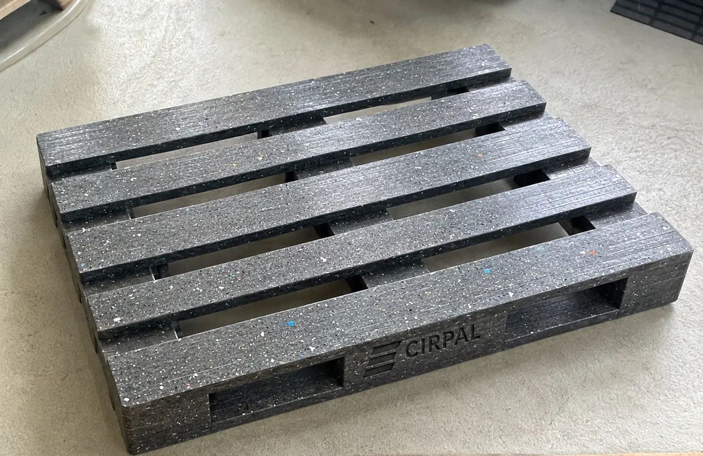
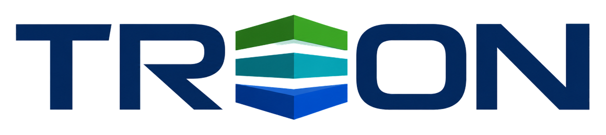
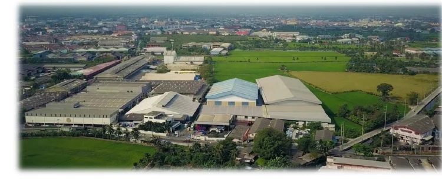
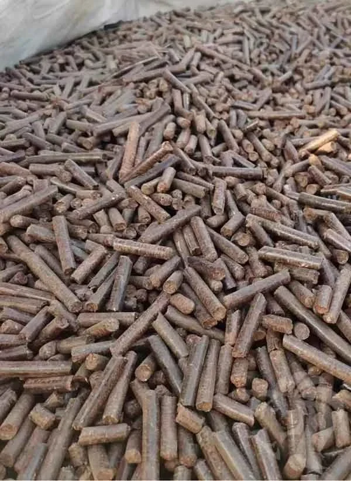
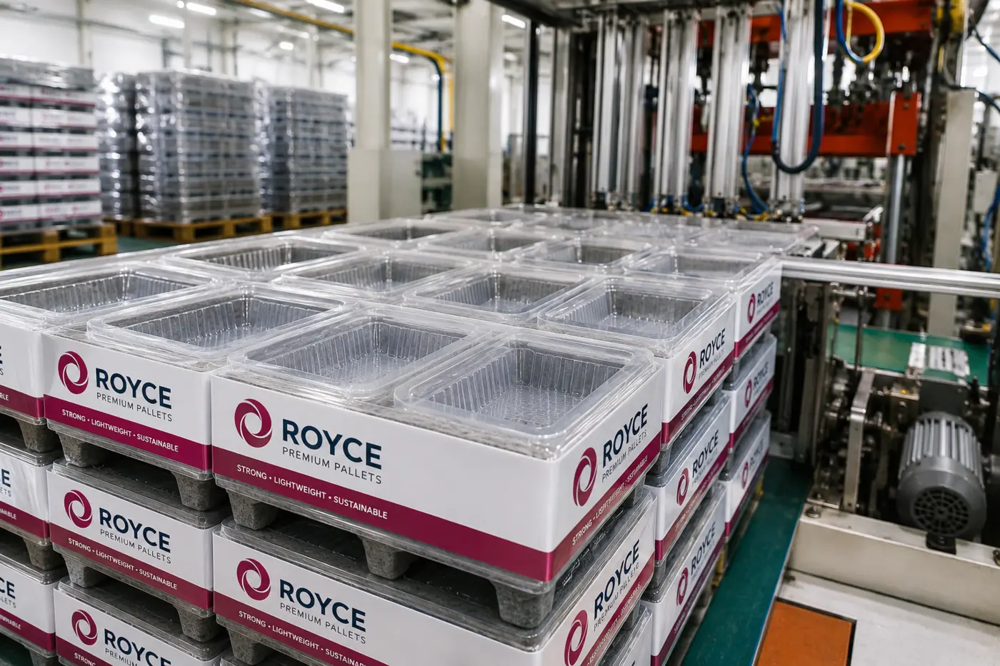

Produktplattform
Eine definierte Anwendung für zirkuläre Verbundmaterialien mit klarem Logistiknutzen.

Thailand ist der CIRPAL-Referenzmarkt zur Prüfung des TREON-Betriebsmodells für industrielle Länderpartnerschaften. Royce Universal stellt die strategische Fertigungs- und Co-Innovation-Basis für die lokale Umsetzung und die spätere Replikation in weiteren Ländern bereit.

TREON betrachtet Thailand nicht als isoliertes Fabrikprojekt. Im Mittelpunkt steht ein vernetztes Ökosystem, in dem qualifizierte Rohstoffe, spezialisierte Fertigung und kommerzielle Nachfrage ineinandergreifen.

Eine definierte Anwendung für zirkuläre Verbundmaterialien mit klarem Logistiknutzen.

Recyclingkunststoffe und Agrarreststoffe können nach Qualifizierung und Rezepturentwicklung die Materialbasis bilden.

Fertigung, Tests, technische Entwicklung und Logistik schaffen den Weg vom Prototyp zur skalierbaren Umsetzung.
Die Reihenfolge ist bewusst praxisorientiert: Zunächst werden Material und Produkt validiert. Danach folgen der Nachweis von Produktionsbereitschaft und Kundennachfrage und erst anschließend die Skalierung.
Geeignete Recycling- und Agrarmaterialströme definieren.
Leistung, Verarbeitbarkeit und Anwendungsanforderungen bestätigen.
Technische Entwicklung, Fertigung, Tests und Betriebsstrukturen verbinden.
Pilotkunden, Distributoren und einen skalierbaren regionalen Marktzugang entwickeln.
Der Ausbauplan sieht in den nächsten zwei Jahren fünf Maschinen in Thailand vor. Bei einer Planungsgröße von rund 200.000 Paletten je Maschine und Jahr ergibt sich nach vollständigem Ausbau eine rechnerische Zielkapazität von rund einer Million Paletten jährlich. Tatsächliche Leistung und Zeitplan hängen von Prototypentests, Finanzierung, betriebsbereiten Standorten und Nachfrage ab.
TREON steuert das Franchise- und Kommerzialisierungssystem. Spezialisierte Partner bringen Technologie, Materialkompetenz, Engineering und industrielle Fertigung ein. Royce Universal ist der strategische Fertigungs- und Co-Innovation-Partner für das Thailand-Referenzmodell.
Sprechen Sie mit TREON über das Thailand-Referenzmodell, Entwicklung von Master-Franchise-Partnerschaften, Rohstoffe, Produktionspartnerschaften oder kommerzielle Zusammenarbeit rund um CIRPAL.